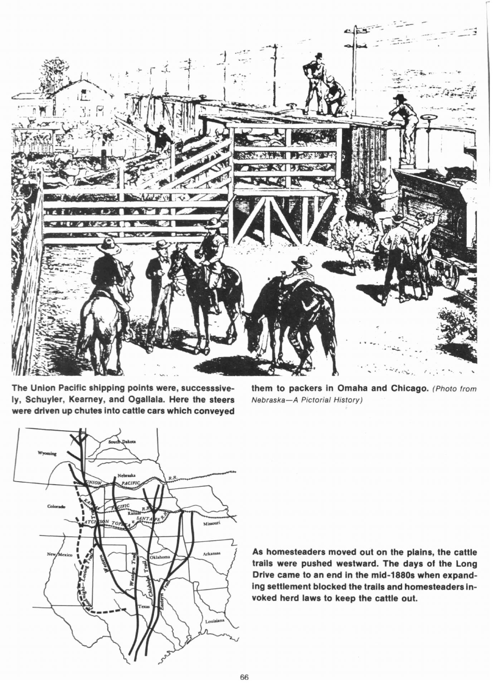
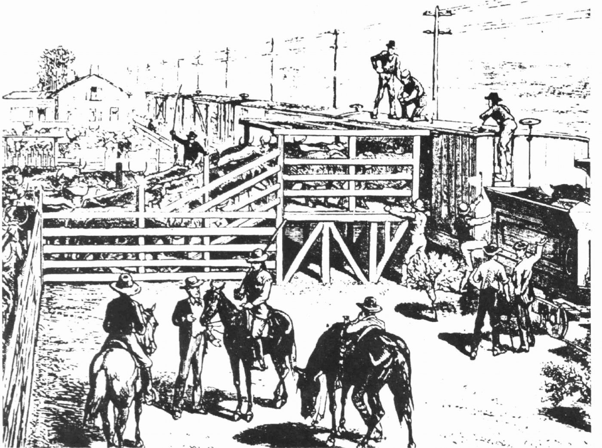

The book · Back matter
Page 66 The Union Pacific shipping points were, successsively, Schuyler, Kearney, and Ogallala. Here the steers were driven up chutes into cattle cars which conveyed them to packers in Omaha and Chicago. (Photo from Nebraska—A Pictorial History)


Transcription



Transcriber’s notes
End-matter filler page of historical illustrations from 'Nebraska—A Pictorial History' (not Kastl family material). First caption is set in two columns below the engraving; the second text block sits to the right of the map and serves as its caption. Caption typo kept as printed: 'successsively' (printed 'successsive-/ly'). Note this credit spells 'Pictorial' whereas p.65 (s067) prints 'Pictoral'.
Library stamps and handwriting (not part of the book)
- Thin vertical line along the right edge of the scan near the top (page edge/scanner artifact).